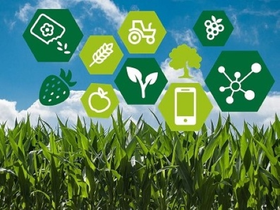

ARTIKEL
Mampukah Pertanian Modern Jadi Solusi Bagi Petani Indonesia?

Pertanian Indonesia memiliki beberapa masalah seperti menurunnya lahanpertaniankarena alih fungsi, produksi yang belum optimal, distribusi yang panjang dan mahal, kepemilikan yang kecil, harga yang kurang bersaing, kualitas sumber daya manusia serta pemahaman teknologi yang rendah, dan belum sepenuhnya terintegrasi dengan industri pengolahan.Menanggapi berbagai permasalahan itu, muncul konsep pertanian modern. Pertanian modern adalah praktik pertanian yang menggunakan ilmu dan teknologi terkini untuk meningkatkan efisiensi, efektivitas proses sekaligus mengurangi input sumber daya alam seperti lahan, air, dan energi.Pertanian modern juga melibatkan penggunaan berbagai mesin, rekayasa genetik, sistem informasi, dan lainnya. Di Indonesia, praktik ini belum diterapkan secara merata.Pada masa pemerintahan Joko Widodo dan Jusuf Kalla pun, program yang paling menonjol adalah bantuan mesin-mesin pertanian dalam skala besar untuk modernisasi pertanian. Hal ini dibarengi dengan peningkatan kelembagaan seperti Usaha Jasa Pelayanan Alsintan (UPJA) dan korporasi pertanian.Tidak hanya pemerintah, perguruan tinggi dan lembaga swasta pun turut berperan dengan memberi pendampingan teknologi. Misalnya, Universitas Padjadjaran (Unpad) melakukan pendampingan untuk mengakses pasar modern seperti supermarket.“Fakultas kita melakukan pendampingan di Pantura dan di Lembang untuk teknologinya, untuk transportasi pengolahan hasil perhatian. Ini membuat petani bisa mengakses pasar,” tutur Kepala Lab Alat dan Mesin Teknik Pertanian Unpad Mimin Muhaemin.Menurut Mimin, industri teknologi secara teoritis memang dapat menjadi solusi bagi petani. Namun, apakah pembangunan pertanian yang telah dilaksanakan dapat mensejahterakan petani?“Memang pelik untuk mengukur kesejahteraan petani. Teknologi sebenarnya dapat memecahkan masalah petani walau belum semua karena tidak semua petani bisa mengakses,” ujarnya.
Salah satu alat pengukur kesejahteraan petani adalah Nilai Tukar Petani (NTP). Bila lebih dari 100, berarti petani mengalami surplus. Sebaliknya, bila kurang dari 100, petani mengalami defisit. Kenyataannya, nilai NTP selalu naik turun.Situasi politik, kesehatan, tren pasar, bencana alam hingga pasar internasional menjadi hal-hal yang mempengaruhi harga barang. “Pandemi restoran tutup, harganya jatuh,” Mimin mencontohkan.Harga beberapa komoditas bahkan dipatok oleh pemerintah karena berkaitan dengan stabilitas dan kekuasaan politik. “Beras itu bukan cuma komoditas pertanian, itu juga politik,” jelasnya.Agar petani lebih sejahtera, menurut Mimin, pemerintah perlu menciptakan infrastruktur, kondisi politik, dan iklim usaha yang kondusif. “Kalau banyak demo ya nanti usahanya gak jalan, gak ada yang beli, jatuh,” terangnya.Selain itu, perlu adanya peningkatan dalam tingkat pendidikan petani dan akses yang merata. Di sisi lain, kemajuan petani ditentukan oleh petani sendiri. “Petani itu umumnya bukan risk taker, jadi tidak berani mengambil resiko,” ujar Mimin.Maka dari itu, petani diharapkan mempunyai sikap mental yang positif, berani mempelajari hal baru, dan proaktif. Pemerintah dan institusi lainnya hanya memfasilitasi dan mendorong.“Bila banyak anak muda yang berpendidikan dan mau ikut terjun, maka saya yakin pertanian akan maju lebih cepat lagi, para petani juga akan lebih sejahtera,” kata Mimin.